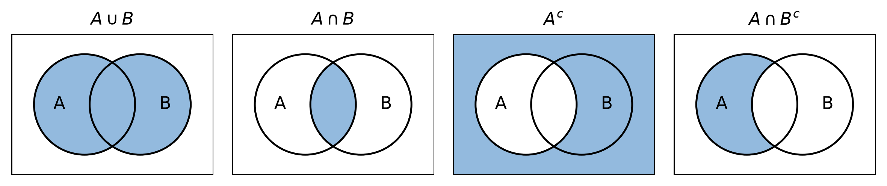
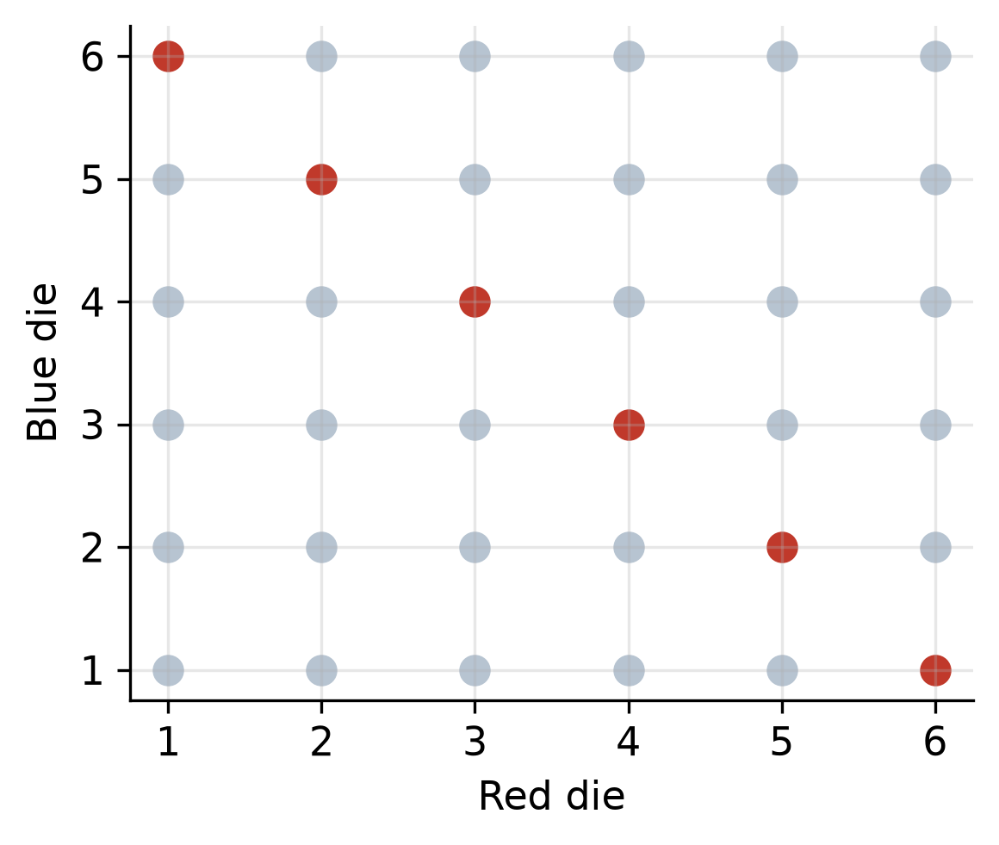
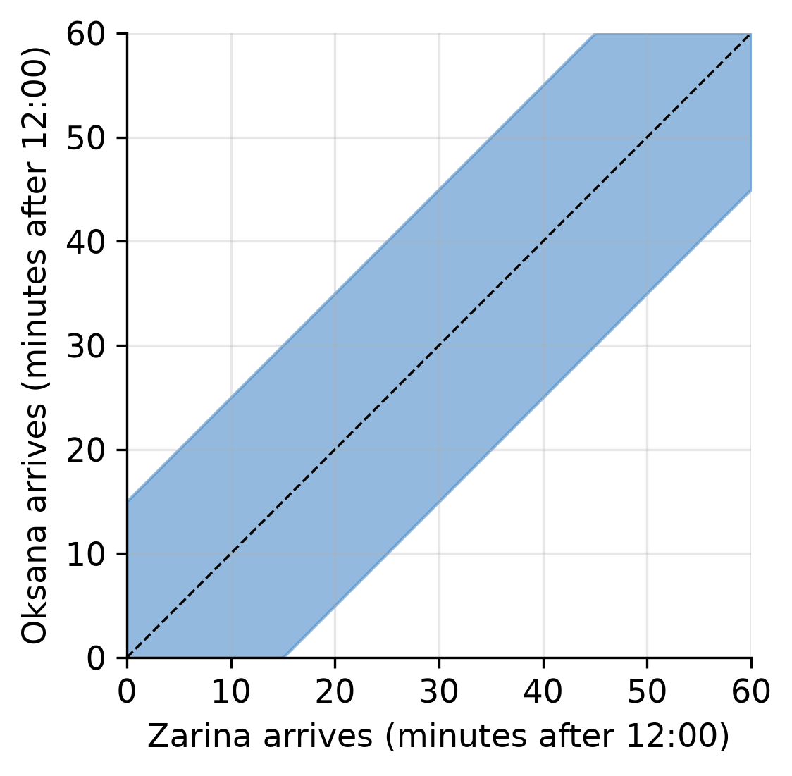

1 Events, probability and counting
\[ \newcommand{\E}{\mathbb{E}} \newcommand{\Var}{\operatorname{Var}} \newcommand{\Cov}{\operatorname{Cov}} \newcommand{\Corr}{\operatorname{Corr}} \newcommand{\Prob}{\mathbb{P}} \newcommand{\R}{\mathbb{R}} \]
Ilya opens a coffee stand near Paveletskaya station and bakes 30 croissants every morning. Will he sell all of them? Nobody knows. Some days he sells 22, some days all 30 by ten o’clock. A better question is how likely it is that he sells at least 25, because that one he can plan around: how much dough to prepare, whether to hire a second person for the rush.
Probability theory is the language for questions of this second kind. Before we can compute anything we need a vocabulary: what exactly is “an outcome”, what is “an event”, and what rules a probability must obey. Then we will see how far plain counting takes us.
1.1 Experiments and outcomes
Definition 1.1 (Random experiment and sample space) A random experiment is a procedure whose result we cannot predict with certainty, but whose possible results we can list in advance. Each possible result is an outcome. The set of all outcomes is the sample space, written \(\Omega\).
The list of outcomes is something you choose. It depends on what you decide to record.
Example 1.1 (Four experiments, four sample spaces)
- One customer walks up to Ilya’s stand and either buys something or leaves. \(\Omega=\{\text{buys},\ \text{leaves}\}\).
- Two customers walk up one after another. We now record both, in order: \(\Omega=\{BB,\ BL,\ LB,\ LL\}\), where \(B\) means buys and \(L\) means leaves. Four outcomes, and \(BL\) is not the same as \(LB\).
- We count the croissants sold in a day. \(\Omega=\{0,1,2,\dots,30\}\).
- We measure how many minutes a customer waits in the queue. \(\Omega=[0,\infty)\). This sample space is not a list at all, it is a whole interval of numbers.
Experiment 3 deserves a second look. If Ilya sold croissants without limit, the space would be \(\{0,1,2,\dots\}\), infinite but still a list. Experiment 4 is a different kind of infinity: you cannot number the possible waiting times one by one. We will keep this difference in mind until Lecture 4.
A habit to avoid: choosing \(\Omega\) too coarse. If you record only “customer 1 buys” and “customer 2 buys” as one number (how many bought, 0, 1 or 2), you lose the difference between \(BL\) and \(LB\), and the three remaining outcomes are no longer equally likely. We will meet exactly this trap with dice in Section 1.4.
1.2 Events and set operations
Definition 1.2 (Event) An event is a set of outcomes, a subset \(A\subseteq\Omega\). We say that \(A\) occurs if the outcome of the experiment belongs to \(A\).
The whole space \(\Omega\) is the sure event, since something always happens. The empty set \(\varnothing\) is the impossible event.
Events are sets, so we combine them with set operations. Each operation has a plain-language reading, and you should be able to go both ways without thinking.
| Notation | Reads as | Occurs when |
|---|---|---|
| \(A\cup B\) | \(A\) or \(B\) | at least one of them occurs |
| \(A\cap B\) | \(A\) and \(B\) | both occur |
| \(A^c\) | not \(A\) | \(A\) does not occur |
| \(A\cap B^c\) | \(A\) but not \(B\) | \(A\) occurs and \(B\) does not |
Figure 1.1 shows them as regions of a rectangle. The rectangle is \(\Omega\).
Example 1.2 (Promo code and mobile app) An online store picks one customer at random from yesterday’s orders. Let \(A\) be “the customer used a promo code” and \(B\) “the customer ordered through the mobile app”. Then \(A\cap B^c\) is an order with a promo code placed on the website, and \((A\cup B)^c\) is an order with no promo code that was not placed in the app. The event \(A^c\cap B^c\) reads the same way, and that is no coincidence: the two events are equal, and the next result says why.
Definition 1.3 (Mutually exclusive events, partition) Events \(A\) and \(B\) are mutually exclusive (or disjoint) if \(A\cap B=\varnothing\): they cannot occur together. Events \(H_1,\dots,H_n\) form a partition of \(\Omega\) if they are pairwise mutually exclusive and \(H_1\cup\dots\cup H_n=\Omega\). Exactly one of them occurs.
For any event \(A\), the pair \(A\) and \(A^c\) is the simplest partition. Partitions come back in Lecture 2, in the law of total probability.
Theorem 1.1 (De Morgan’s laws) \[ (A\cup B)^c = A^c\cap B^c,\qquad (A\cap B)^c = A^c\cup B^c . \]
Proof
An outcome is outside \(A\cup B\) exactly when it is outside \(A\) and outside \(B\), which is the first law. The second law is the same sentence with “and” and “or” swapped. In words: “not (promo or app)” is “no promo and no app”. This is the equality in Example 1.2.
1.3 The axioms of probability
What should a probability be? Think of the share of days on which an event happens, over a very long run. That share is never negative, it equals 1 for the sure event, and for events that cannot happen together the shares add up. Kolmogorov turned these three observations into the definition.
Definition 1.4 (Probability) A probability assigns to every event \(A\) a number \(\Prob(A)\) so that
- \(\Prob(A)\ge 0\);
- \(\Prob(\Omega)=1\);
- if \(A_1, A_2,\dots\) are pairwise mutually exclusive, then \(\Prob(A_1\cup A_2\cup\dots)=\Prob(A_1)+\Prob(A_2)+\dots\)
For an infinite sample space such as \([0,\infty)\) one cannot assign probabilities to literally every subset, and the full theory restricts the events allowed. We will not need that. Everything in this course that looks like an event is an event.
Everything else follows from these three lines.
Theorem 1.2 (Consequences of the axioms) For any events \(A\) and \(B\):
- \(\Prob(\varnothing)=0\).
- \(\Prob(A^c)=1-\Prob(A)\).
- If \(A\subseteq B\), then \(\Prob(A)\le\Prob(B)\). In particular \(\Prob(A)\le 1\).
- \(\Prob(A\cup B)=\Prob(A)+\Prob(B)-\Prob(A\cap B)\).
Proof. For (1): take \(A_1=\Omega\) and \(A_2=A_3=\dots=\varnothing\) in axiom 3. They are mutually exclusive and their union is \(\Omega\), so \(\Prob(\Omega)=\Prob(\Omega)+\Prob(\varnothing)+\Prob(\varnothing)+\dots\) The left side is finite, and every term on the right is non-negative, so \(\Prob(\varnothing)=0\).
For (2): \(A\) and \(A^c\) are mutually exclusive and \(A\cup A^c=\Omega\), so by axioms 3 and 2, \(\Prob(A)+\Prob(A^c)=\Prob(\Omega)=1\).
For (3): if \(A\subseteq B\), then \(B\) is the union of the mutually exclusive events \(A\) and \(B\cap A^c\). So \(\Prob(B)=\Prob(A)+\Prob(B\cap A^c)\ge\Prob(A)\), since the last term is non-negative. Taking \(B=\Omega\) gives \(\Prob(A)\le 1\).
For (4): write \(A\cup B\) as two mutually exclusive pieces, \(A\) and \(B\cap A^c\). Then \(\Prob(A\cup B)=\Prob(A)+\Prob(B\cap A^c)\). Also \(B\) splits into \(B\cap A\) and \(B\cap A^c\), so \(\Prob(B\cap A^c)=\Prob(B)-\Prob(A\cap B)\). Substitute.
Property (4) is the formula you will use most often, and the mistake you will make most often is to forget the last term. Add \(\Prob(A)\) and \(\Prob(B)\), and the outcomes in both events are counted twice. For three events the correction goes one step further:
\[ \Prob(A\cup B\cup C)=\Prob(A)+\Prob(B)+\Prob(C)-\Prob(A\cap B)-\Prob(A\cap C)-\Prob(B\cap C)+\Prob(A\cap B\cap C). \tag{1.1}\]
Example 1.3 (Promo code and mobile app, with numbers) In a hypothetical online store 40% of orders use a promo code, 55% come through the mobile app, and 20% do both. Take \(A\) and \(B\) as in Example 1.2. Find the probability that a random order
- uses a promo code or the app;
- uses neither;
- comes through the app without a promo code.
Solution. (a) By Theorem 1.2(4), \(\Prob(A\cup B)=0.40+0.55-0.20=0.75\). (b) This is the complement of (a): \(\Prob\big((A\cup B)^c\big)=1-0.75=0.25\). (c) \(\Prob(B\cap A^c)=\Prob(B)-\Prob(A\cap B)=0.55-0.20=0.35\).
A check: promo only (0.20), app only (0.35), both (0.20) and neither (0.25) are four mutually exclusive pieces, and \(0.20+0.35+0.20+0.25=1\).
The complement rule is the tool for any “at least one” question. Computing the probability that something happens at least once is usually hard, while the probability that it never happens is often a single product. Then subtract from 1. We will use it in the lecture on counting and again in every later lecture.
1.4 Classical probability
The axioms say what a probability must satisfy, and not how to find it. The oldest recipe is the one for games of chance.
Definition 1.5 (Classical probability) Suppose \(\Omega\) has finitely many outcomes and, by the symmetry of the experiment, all of them are equally likely. Then for every event \(A\) \[ \Prob(A)=\frac{|A|}{|\Omega|}=\frac{\text{number of outcomes in } A}{\text{number of outcomes in }\Omega}. \]
Check that this satisfies the axioms: it is never negative, \(\Prob(\Omega)=1\), and for mutually exclusive events the counts add up. So it is a legitimate probability. The entire difficulty is hidden in the phrase “equally likely”.
Example 1.4 (Two dice) Roll a red die and a blue die. The sample space has 36 outcomes \((i,j)\), where \(i\) is the red number and \(j\) the blue number, and all 36 are equally likely. What is the probability that the sum is 7?
Solution. The outcomes with sum 7 are \((1,6),(2,5),(3,4),(4,3),(5,2),(6,1)\). There are 6 of them (Figure 1.2), so \(\Prob(\text{sum}=7)=6/36=1/6\).

Now the trap. The possible sums are \(2,3,\dots,12\), eleven values. Many students conclude that each sum has probability \(1/11\). It does not. The sum 7 can happen in six ways and the sum 2 in only one, \((1,1)\). The eleven sums are the coarse sample space we warned about in Section 1.1, and its outcomes are not equally likely. The 36 pairs are. When you use Definition 1.5, first ask: what is the finest description of the experiment in which every outcome is equally likely?
The same trap catches grown-ups. Toss a fair coin twice and ask for exactly one head. The answer is \(2/4=1/2\) (outcomes \(HT\) and \(TH\)), not \(1/3\).
Classical probability is the right tool for dice, cards, lotteries and drawing a random name from a list. It is the wrong tool for most business questions. “A customer either buys or does not, so the probability is 1/2” is the same mistake in a suit: the two outcomes are not equally likely, and for such cases the probability has to come from data or from a model. That is what the rest of the course is about.
1.5 Counting
To use Definition 1.5 we must count outcomes, and the lists get too long to write out. A lottery with 6 numbers out of 45 has millions of outcomes. Three rules cover almost everything we need.
Theorem 1.3 (Product rule) If a procedure has \(k\) stages, the first stage can be done in \(n_1\) ways, the second in \(n_2\) ways (whatever happened in the first), and so on, then the whole procedure can be done in \(n_1 n_2\cdots n_k\) ways.
Proof
After the first stage there are \(n_1\) possible situations. Each of them continues in \(n_2\) ways, which gives \(n_1n_2\) pairs of choices. Each pair continues in \(n_3\) ways, which gives \(n_1n_2n_3\) triples, and so on up to stage \(k\).
Example 1.5 (PIN codes) A bank card has a four-digit PIN. Each of the four positions has 10 choices, so there are \(10^4=10\,000\) PINs. If the digits must all be different, the first position has 10 choices, the second 9, then 8 and 7, giving \(10\cdot 9\cdot 8\cdot 7=5040\).
A thief who guesses one PIN at random hits it with probability \(1/10\,000\).
The two PIN counts are of different kinds. With repeats allowed, each digit is chosen afresh and we get \(n^k\) (here \(10^4\)); this is an ordered selection with repetition, and the product rule is all it needs. Without repeats the choices shrink by one at each step. That case, and two related ones, come up so often that they have classical names. Write \(n!=n(n-1)\cdots 2\cdot 1\) (“\(n\) factorial”), with \(0!=1\).
Definition 1.6 (Permutation) A permutation of \(n\) distinct objects is an ordering of all of them in a row. There are \(n!\) permutations (Theorem 1.4).
Kemal drives a delivery van and has 5 shops to visit this morning. Each route is a permutation of the 5 shops, so he can choose among \(5!=120\) routes. Exercise 3 at the end of the chapter, the order of six job interviews, is also about permutations.
Definition 1.7 (Arrangement) An arrangement of \(k\) objects from \(n\) distinct objects (\(k\le n\)) is an ordered selection without repetition: we pick a first, a second, up to a \(k\)-th, and no object is used twice. There are \[ \frac{n!}{(n-k)!}=n(n-1)\cdots(n-k+1) \] arrangements (Theorem 1.4).
A supermarket has 12 brands of tea and 3 slots at eye level: left, middle and right. Putting three brands into the three slots is an arrangement, and there are \(12\cdot11\cdot10=1320\) of them. The PINs with four different digits in Example 1.5 are arrangements of 4 digits from 10: \(10!/6!=5040\).
A permutation is the arrangement with \(k=n\), and then the formula gives \(n!/0!=n!\). That is one reason to set \(0!=1\).
Definition 1.8 (Combination) A combination of \(k\) objects from \(n\) distinct objects (\(0\le k\le n\)) is an unordered selection without repetition, that is, a subset of size \(k\). The number of combinations is written \(\binom{n}{k}\), read “\(n\) choose \(k\)” and called the binomial coefficient. Its formula is Equation 1.2 below.
The same supermarket picks 3 of its 12 tea brands for a weekend discount. Now the three brands form a set, and nothing is first or last. The lottery in Example 1.6 and the inspector’s sample in Example 1.7 are combinations too.
Other textbooks use other words and symbols for the same things, and you should recognise them. An arrangement is also called a \(k\)-permutation, a partial permutation or a variation, and other books write \(A_n^k\), \(P(n,k)\) or \({}_nP_k\) for the number of them. For \(\binom{n}{k}\) other books write \(C_n^k\) or \({}_nC_k\). Be careful with the word “arrangement” in English books: many of them use it loosely for any ordering, a full permutation included. In this course it always means an ordered selection of \(k\) from \(n\).
Theorem 1.4 (Orderings and selections) From \(n\) distinct objects:
- There are \(n!\) permutations.
- There are \(\dfrac{n!}{(n-k)!}=n(n-1)\cdots(n-k+1)\) arrangements of \(k\) objects.
- There are \[ \binom{n}{k}=\frac{n!}{k!\,(n-k)!} \tag{1.2}\] combinations of \(k\) objects.
Parts 2 and 3 are linked by \(\dfrac{n!}{(n-k)!}=k!\binom{n}{k}\).
Proof. Part 1 is the product rule with \(n,n-1,\dots,1\) choices. Part 2 is the same with \(k\) stages. For part 3, each combination of \(k\) objects appears in the count of part 2 exactly \(k!\) times, once for each permutation of its \(k\) objects. So the number of arrangements is \(k!\binom{n}{k}\). Divide by \(k!\).
In the tea example, \(1320=3!\cdot 220\): each set of three discounted brands can be put into the three eye-level slots in \(3!=6\) ways, and \(\binom{12}{3}=220\).
Two useful facts: \(\binom{n}{k}=\binom{n}{n-k}\) (choosing who goes in is the same as choosing who stays out) and \(\binom{n}{0}=\binom{n}{n}=1\).
The practical question is always the same: does order matter? Swap two chosen items. If the result is a different outcome, count arrangements. If it is the same outcome, count combinations. Three candidates for gold, silver and bronze: ordered, \(10\cdot9\cdot8=720\) from ten. Three candidates for a project team: unordered, \(\binom{10}{3}=120\). Check: \(720/3!=120\).
Example 1.6 (A 6-from-45 lottery) You pick 6 different numbers from 1 to 45, and the draw produces 6 numbers. Order is irrelevant. The number of possible draws is \[ \binom{45}{6}=\frac{45\cdot44\cdot43\cdot42\cdot41\cdot40}{720}=8\,145\,060, \] so a single ticket wins the jackpot with probability \(1/8\,145\,060\approx 1.2\cdot10^{-7}\). If you bought a ticket every week, you would wait on average about 157 000 years.
The next example is the one to remember. It is a typical quality-control calculation, and we will see it again in Lecture 4 as the hypergeometric distribution.
Example 1.7 (Expired packs) A warehouse shelf holds 20 packs of yoghurt, and 3 of them are past their date. An inspector takes 4 packs at random. Find the probability that
- exactly one is expired;
- none is expired;
- at least one is expired.
Solution. Order does not matter, so \(|\Omega|=\binom{20}{4}=4845\). For (a), choose 1 of the 3 expired packs and 3 of the 17 good ones, which is \(\binom{3}{1}\binom{17}{3}=3\cdot 680=2040\) outcomes (product rule). So \(\Prob=2040/4845\approx 0.421\). For (b), all 4 come from the 17 good packs: \(\binom{17}{4}/\binom{20}{4}=2380/4845\approx 0.491\). For (c), use the complement: \(1-0.491=0.509\).
Notice that the inspector checks four packs out of twenty and finds a problem in barely more than half of the cases, although 15% of the packs are bad. Sampling a small part of a batch is a weak control. That is a point about sample sizes, and we will come back to it in module 3.
1.6 Geometric probability
Sometimes the outcomes cannot be listed at all: a moment in time, a point on a map. If we pick one “at random”, the natural meaning is that every place is equally good, and probability becomes proportional to size.
Definition 1.9 (Geometric probability) Let \(\Omega\) be a segment, a region in the plane, or a region in space, with finite length, area or volume. An outcome is chosen uniformly at random from \(\Omega\) if for every event \(A\subseteq\Omega\) \[ \Prob(A)=\frac{\text{size of }A}{\text{size of }\Omega}, \] where “size” means length, area or volume.
Example 1.8 (A courier in a two-hour window) A courier promises to arrive between 10:00 and 12:00, and the exact moment is uniform over those 120 minutes. You will be out from 10:30 to 11:15. The probability that the courier comes while you are out is the length of the interval (45 minutes) divided by 120: \(45/120=3/8\).
The more interesting case has two random moments.
Example 1.9 (Two people, one café) Zarina and Oksana agree to meet at a café between 12:00 and 13:00. Each arrives at a random moment of that hour, independently of the other, and waits 15 minutes before leaving. What is the probability that they meet?
Solution. Let \(x\) and \(y\) be the arrival times in minutes after 12:00. The pair \((x,y)\) is a uniform point in the square \([0,60]\times[0,60]\), area 3600. They meet when \(|x-y|\le 15\), which is the band around the diagonal in Figure 1.3. It is easier to find the area outside the band: two right triangles with legs \(60-15=45\), each of area \(45^2/2\). The band has area \(3600-45^2=1575\), so \[ \Prob(\text{meet})=\frac{3600-45^2}{3600}=1-\Big(\frac{45}{60}\Big)^2=\frac{7}{16}\approx 0.44. \]

People find 7/16 low. Fifteen minutes feels generous, and yet they miss each other more than half of the time. Writing the meeting problem on the board as a square is the entire trick: two numbers become one point.
A remark that will matter in Lecture 4. In a geometric setting the probability of any single point is zero, because a point has no length. The probability that the courier arrives at exactly 10:47:12.000 is 0, and still she arrives at some moment. Probability zero does not mean impossible once \(\Omega\) is a continuum.
Exercises
- Two dice are rolled. What is the probability that the sum is at least 10?
- A manager says: “The chance of a delay at the supplier is 0.5, the chance of a customs problem is 0.6, and they never happen together.” What is wrong with that statement?
- Six candidates, including Ilya and Priya, are interviewed in random order. What is the probability that Ilya is interviewed before Priya? That the two are interviewed one right after the other, in either order?
- A password has 4 characters, each a lowercase letter. How many passwords have at least one repeated letter? (Use the complement.)
- A point is chosen uniformly in a square of side 2. What is the probability that it lies within distance 1 of the centre?
Answers: (1) \(1/6\). (2) Two mutually exclusive events with probabilities 0.5 and 0.6 would give \(\Prob(A\cup B)=1.1>1\). (3) \(1/2\); \(\frac{5\cdot 2\cdot 4!}{6!}=1/3\). (4) \(26^4-26\cdot25\cdot24\cdot23=456\,976-358\,800=98\,176\). (5) \(\pi/4\approx 0.785\).
The full practice is in Seminar 1.